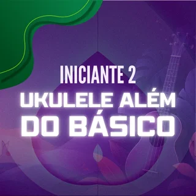
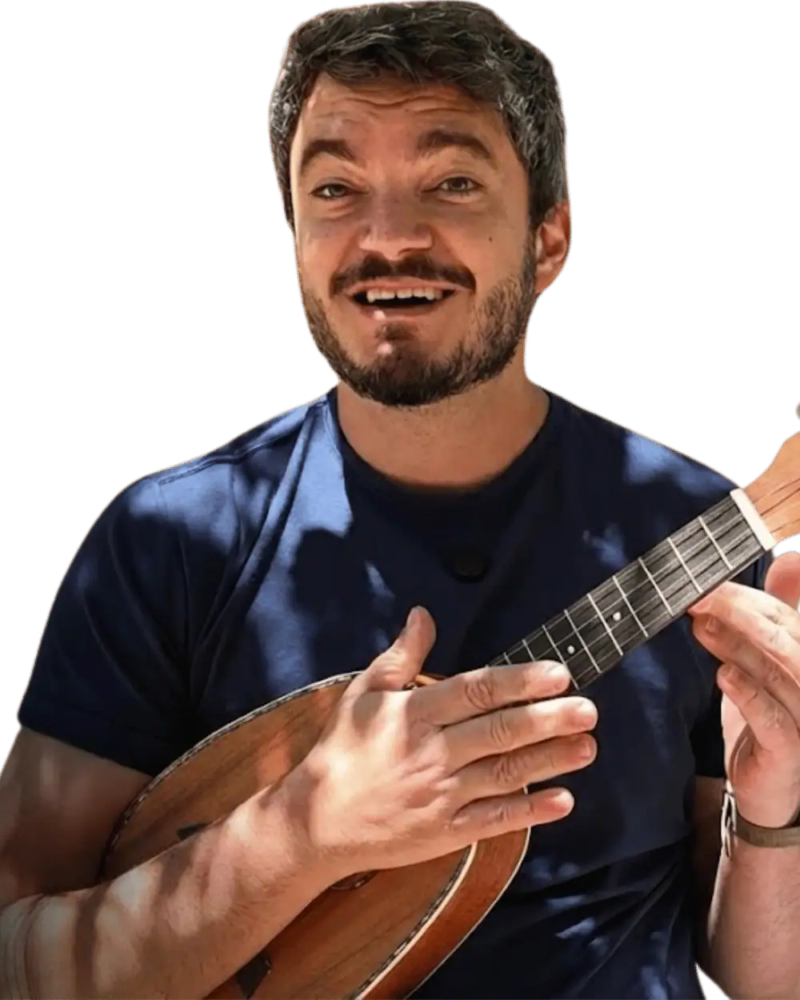
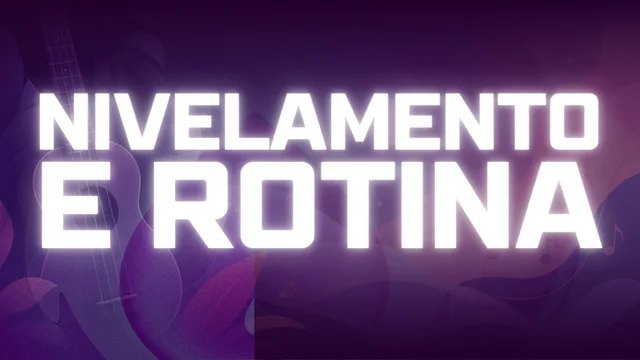
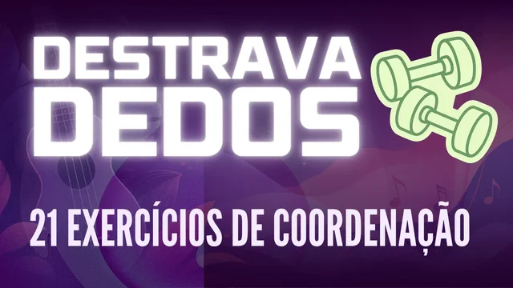
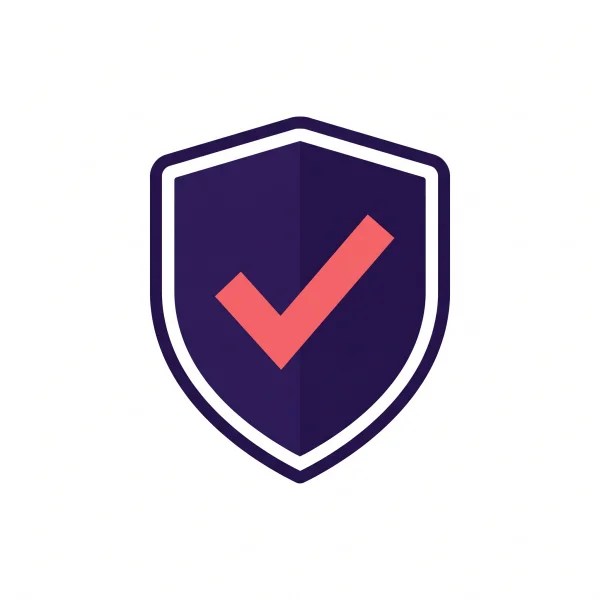

Jornada do Clube
Cinco cursos gravados, na ordem certa, do Iniciante 0 ao Intermediário 2. Cada música estudada em partes pequenas, no seu ritmo.
- Iniciante 0
- Iniciante 1

Iniciante 2- Intermediário 1
- Intermediário 2
Só pra quem já é de casa!
Durante um ano, você tem 3 encontros ao vivo por semana com a gente no ukulele e mais de 50 atividades para enviar em vídeo, cada uma com uma análise personalizada. De presente, você ainda ganha acesso vitalício ao curso inédito de violão do Mateus, com 10 encontros ao vivo só de violão, para sair tocando suas primeiras músicas sem precisar de pestana!

Na terça e na quinta tem plantão de dúvidas: você confirma presença, conta onde travou e a gente resolve ao vivo, com o ukulele na mão. Na quinta à noite tem a Confraria, para tocar junto e conversar. E durante 3 meses, as quartas são do violão.
Os plantões ficam gravados para quem participou. Você vai quando der, e a semana seguinte tem de novo.
Nos pontos que mais importam da jornada, você grava um vídeo tocando e manda pela plataforma. Em até 3 dias úteis volta um vídeo personalizado, mostrando no ukulele o que está bom e o que precisa ajustar.
Assim, um erro na mão da batida ou na mão dos acordes aparece cedo, antes de virar costume.

A jornada do Clube tem 5 cursos e 209 aulas, do zero ao intermediário, e a biblioteca tem 157 músicas separadas por nível. Você escolhe por onde recomeçar, e nos plantões a gente te ajuda a achar o ponto certo.
Cinco cursos gravados, na ordem certa, do Iniciante 0 ao Intermediário 2. Cada música estudada em partes pequenas, no seu ritmo.

Iniciante 2Você responde um questionário rápido e recebe por qual curso recomeçar e uma rotina de estudo para a sua semana.

157 músicas ensinadas em vídeo, separadas por nível, com filtro por batida, quantidade de acordes e gênero.
 Garota NacionalSkank · Iniciante 0 · 2 acordes
Garota NacionalSkank · Iniciante 0 · 2 acordes Azul da Cor do MarTim Maia · Iniciante 1 · 2 acordes
Azul da Cor do MarTim Maia · Iniciante 1 · 2 acordes Amor I Love YouMarisa Monte · Iniciante 2 · 7 acordes
Amor I Love YouMarisa Monte · Iniciante 2 · 7 acordes TrevoAnavitória · Intermediário 1 · 4 acordes
TrevoAnavitória · Intermediário 1 · 4 acordesA live Ukulele na Mão, de quinta, sai do YouTube em 7 dias. No Clube, as gravações ficam guardadas para você assistir quando quiser.
Workshop de Canto com Ukulele, para cantar junto, e Destrava Dedos, para soltar a mão dos acordes. E o Dicionário de Acordes para baixar e consultar.

Completo, do jeito que vai ser vendido na live do dia 22, com acesso vitalício. E quem toca ukulele começa com vantagem: nas quatro cordas mais finas do violão, vários acordes têm o desenho de um acorde do ukulele, só com outro nome.
O desenho do C no ukulele é o do G no violão, nas quatro cordas mais finas. As cordas graves entram depois, no acorde completo.

Você já tocou com essa turma. E tocar fica mais leve quando tem alguém do seu lado toda semana, olhando o que você está fazendo e te guiando.
O plano Ouro do Clube sai por 12x de R$ 150 ou R$ 1.500 por ano.
Para quem já é de casa, até 27/10, fica 12x de R$ 99 ou R$ 957,28 à vista. É o mesmo valor que o público vai pagar só pelo curso de violão na live do dia 22, e aqui ele vem de presente.
Plano Ouro: 12x de R$ 150
12xR$ 99
ou R$ 957,28 à vista por ano. A assinatura renova sozinha pelo mesmo valor, e a gente avisa antes da cobrança.
Garantia de 30 dias. Pagamento seguro pela Hotmart.
Esta condição terminou em 27/10. Fale com a gente no WhatsApp para saber como entrar agora.

Entre, vá aos plantões, mande a primeira atividade e comece o violão. Se em 30 dias você achar que não era o que esperava, pede o reembolso e recebe o valor inteiro de volta.
Renova, para você não perder o acesso sem querer. Antes da cobrança a gente te avisa, e a renovação mantém o mesmo valor com desconto desta condição de casa. Se não quiser renovar, é só falar com a nossa equipe no WhatsApp antes da data, sem multa e sem burocracia.
Você tem 30 dias de garantia. Se nesse prazo achar que não é para você, pede o reembolso e recebe o valor inteiro de volta.
As análises continuam, agora com mais de 50 atividades ao longo da jornada. O que chega junto são os encontros ao vivo: dois plantões de dúvidas por semana e a Confraria toda quinta.
Consegue. Você escolhe por onde recomeçar na jornada, e nos plantões a gente te ajuda a achar o ponto certo para recomeçar.
É ao vivo, pelo Google Meet, na terça às 19h30 e na quinta às 10h. A agenda da semana abre no domingo às 10h, você confirma presença com a sua dúvida e é chamado na ordem de confirmação. A gravação fica para quem participou.
Só para o curso de violão. O módulo de preparação, que entra na plataforma até 20/10, mostra qual violão comprar. O acesso ao curso é vitalício, e os 10 encontros ao vivo acontecem de 28/10 a 27/01, com as gravações guardadas para sempre.
Fale com a nossa equipe pelo WhatsApp: a gente olha o seu plano atual e explica como fica a troca para essa condição.
É uma assinatura anual: 12x de R$ 99 no cartão ou R$ 957,28 à vista, pela Hotmart, em ambiente seguro.
Até 27/10, às 23h59 (horário de Brasília).
Seu acesso sai na hora: a jornada, a biblioteca e a agenda dos plantões da semana. E a preparação do curso de violão sai até 20/10.